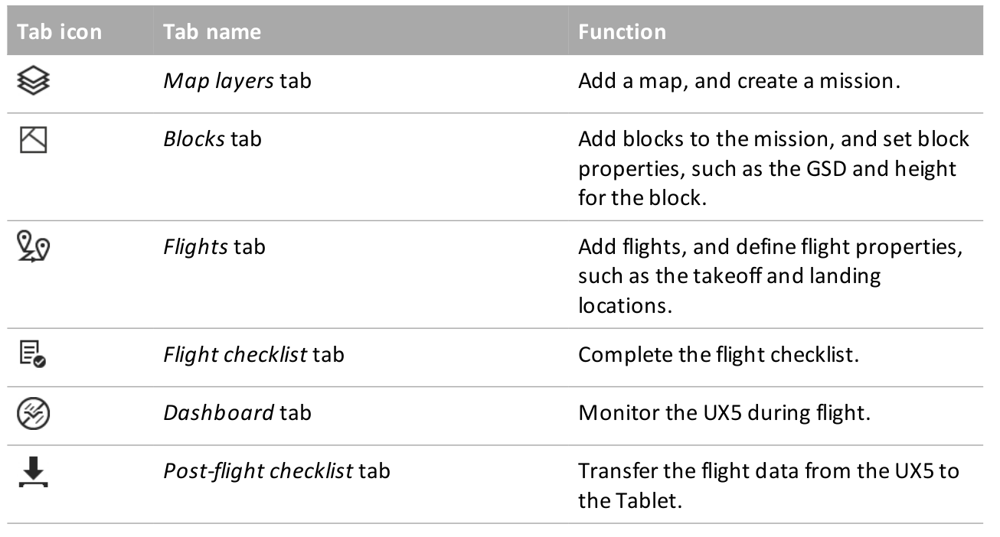
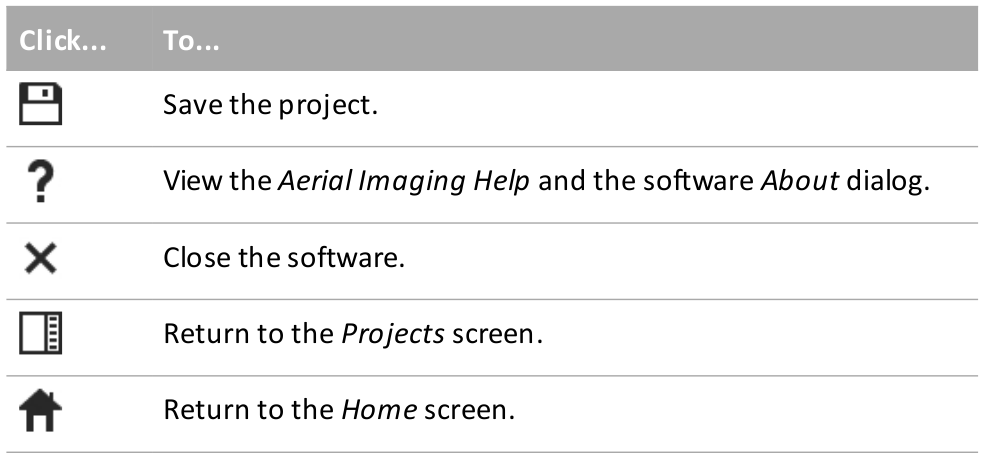
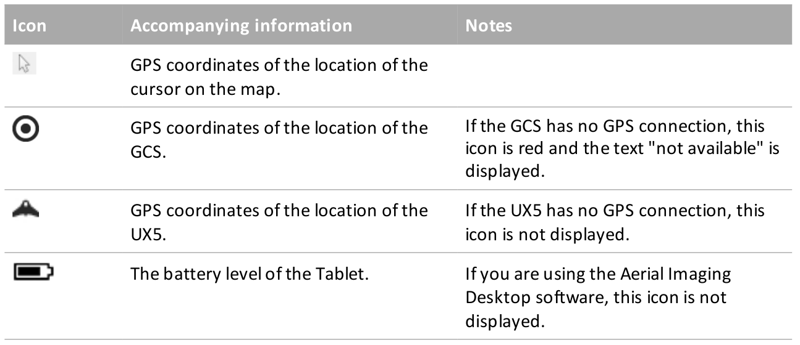
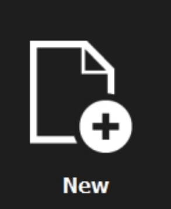
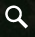
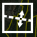
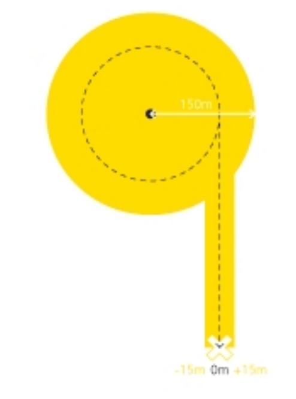
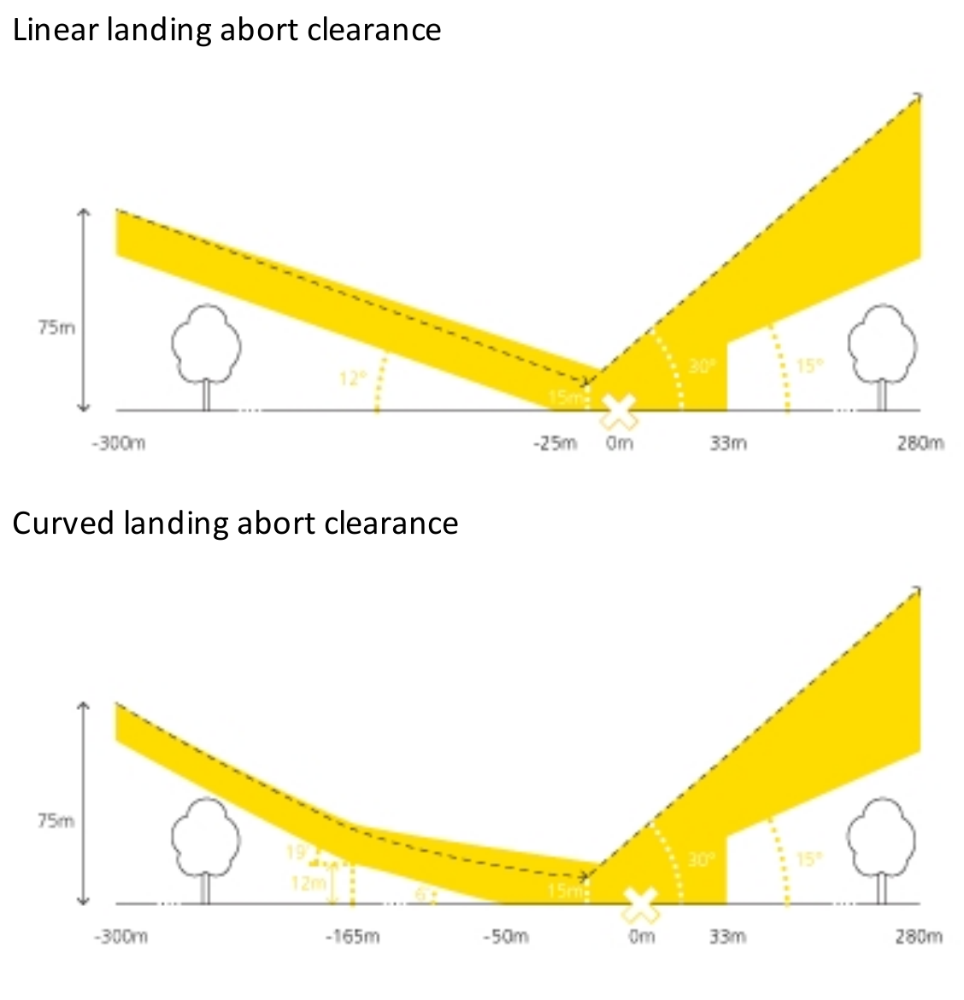
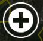

Flight planning in Trimble Aerial Imaging software
You have already seen the UAV we will fly - UX5 Aerial Imaging Rover (if you don't remember the details - check the lecture slides or movie). It is produced by Trimble and comes with dedicated flight planning software - Trimble Aerial Imaging. It is also possible to process the data using Trimble software (Trimble Business Center) but we will use their solution just for the flight planning phase Trimble Aerial Imaging can be launched on the tablet that serves as a Ground Control Station, but it is also available for any PC (installation file here, installation instructions here). The project files with flight plans can be transfered to the Ground Control Station later. Trimble offers a lot of materials regarding the UX5 solution (see the literature), the most useful for the flight planning is the User Guide (section about the software starts at page 16).
Terms used
- PROJECT - a file with extension .gwt. Consists of one or more MISSIONS
- MISSION - represent the areas to be aerially photographed. A mission area consists of one or more BLOCKS within the mission area
- BLOCK- by default there is one block per mission area, but if the estimated flight time for a block exceeds 50 minutes then the mission area must be divided into smaller blocks. Blocks provide flexibility so that the mission areas in a project can be covered in the smallest number of flights, because a flight can cover one or more blocks, as long as the total flight time for the blocks is less than 50 minutes.
User interface
- software tabs 
- Title bar buttons 
- Status icons 
Phases
- Project definition: In the office you can define one or more missions, adding details such as background maps, avoidance zones if required. The area, ground sample distance (GSD), and the amount of image overlap are defined for each mission.
- Block definition: Depending on the size and nature of a mission area, you can split a mission
area into one or more blocks. In the office you can specify the wind and flight line direction.
You can check the wind direction forcast on this website For each block you can customize the GSD, height, and image overlap. In the field, you must validate the block properties to take into account the actual wind direction and environment. - Flight definition: In the office you can prepare one or more flights to cover the block(s) and suggest the takeoff and landing locations. In the field you must validate the flight properties, including the selected takeoff and landing locations. The flight checklist is completed to ensure that the system is ready for the flight.
General workflow
- Creating a project
- Preparing the project map
- Creating the mission
- Defining the blocks
- Obstacle clearances
- Defining the flights
- Exporting the project and simulation
Creating a project
- Click  and enter the name of the new project in the pop-up field. The Map layers screen for the new project appears
Preparing the project map
To prepare the project map, select the Map layers tab.
- Click  on the map and then enter the location of interest and zoom in or out, or pan until you view the preferred map area
- To find the Mid Pid Pines area go to the coordinates 35.727104, -78.696173 instruction movie
- Click and then click to save the offline map - the current view of the online map, including two extra zoom levels, is downloaded (The largest area you can download has zoom level 10)
instruction movie - Import all additional layers that can be useful while planning the flight - COA boundaries and GCPs
- toggle between the map view and the satellite view of the online map,
- display the map grid lines,
- zoom in and zoom out of the map and zoom the map and all of its layers to the best view;
- center the map on the current GPS location,
- center the map on the current UX5 location;
Adding a background map
For this project you will use an online map - a google orthophoto - as the backgroung. Then you will save it as an offline map that ensures you will be able to view the map background during the flight, if you do not have an Internet connection in the field. For the areas with insufficient google maps resolution you can use your own georeferenced map (for details see User Guide p.26)
Managing map layers
The "Online map" is the map's default layer. The online map is always the bottom layer and cannot be moved up.
On the left side of the window there are multiple buttons that control the behavior of a display. You can:
in the filed you can additionally:
you can also block and hide each layer and rename it and move it up and down in the layers stack.
Creating the mission
A mission is the area to be flown over at a specified ground sample distance (GSD) and image overlap.
instruction movie- To create the mission area click and then click to draw a polygonal or rectangular area
- To edit the mission properties, click next to the mission name in the map layers list and
- select the type of sensor that you will use to map the mission: Sony NEX-5
- Set the ground sample distance (GSD) The smaller the value in the GSD field, the more detailed the images. Take into account that this is desired resolution for orthophoto, generated DSM will be about 4 times lower resolution
The GSD field and the height at which the UX5 aerial imaging rover flies are linked -the higher the unmanned aircraft flies, the larger the distance on the ground represented by each pixel in the images acquired during the flight. - Enter the image forward and side overlap. The default value is 80%. Image overlap can range from 60% to 90%. A higher overlap results in: better accuracy, a higher density of flight lines on the area, a higher number of images to process, longer processing times for images, longer flight duration for the same area
- To add additional information to the map (optional)
- create avoidance zones and
- import a kml or csv* file
- *The format for the Ground Control Points .csv file is: Identifier, Latitude, Longitude, Altitude. The coordinates must be in the WGS84 coordinate system and the altitude in meters. There should be no header.
Defining the blocks
To define blocks, select the Blocks tab.
- Each mission area defined for a project is automatically covered by one block.
- Define more blocks as required to:
- cover the entire mission area. You will need to add more blocks if the estimated time for a block exceeds 50 minutes. The flight time can be viewed in the block properties.
- cover different parts of the mission at different heights to deal with differences in terrain.
- To view the properties of a block, click next to the block name. By default the block inherits the properties of the mission. If required, edit the height (or GSD) and image overlap values for the block, taking into account specific obstacles in the block. instruction movie
- If the estimated flight duration exceeds 50 minutes, a warning indication appears next tothe block name in the list. If the warning appears then you must split the block - the  button in th editing mode will divide the block through the center, perpendicular to the wind direction, but you can change its position by manipulating the boudary points instruction movie
- To use a left turn or a right turn to enter the block during flight, click or This setting also defines the first waypoint that the UX5 will fly to.
- You can also hide the block, copy or rename it.
Obstacle clearances
When defining a flight, you must ensure that the selected takeoff and landing locations are clear of obstacles. When you arrive at the site, visually check the takeoff and landing locations to ensure that the selected locations are free of obstacles.
- Obstacle clearances for takeoff
- From 0 m (takeoff location) to 50 m: clear area free of obstacles within 30° to the left and right of the launch direction
- From 50 m to 280 m: obstacles must not appear above the safety line determined by a 15° safety angle and within 25 m (82 ft) to the left and right of the launch direction (see picture below)
- Obstacle clearances for cruise flight
- During cruise flight, no obstacles must appear between the cruise flight height and 25 m (82 ft) below it
- Obstacle clearances for descent
- When entering the landing orbit, no obstacles must appear with a 300 m (984 ft) radius of the center of the orbit.
- Once the UX5 has descended 25 m from the cruise flight height, the required obstacle-free area has a radius of 150 m (462 ft)
- Obstacle clearances for landing
- Along the final leg of the landing, there must be a clear area free of obstacles within 15 m to the left and right of the landing direction 
- In the final leg of the landing, no obstacles must appear in the yellow zone shown in the vertical cross section of the landing. In addition, the landing location must be free of obstacles and meet the minimum size indicated:

- During the final leg of the landing it is possible to click the Abort button in emergency situations. To successfully abort the flight, extra clearances should be taken into account:

Defining the flights
To define flights, select the Flights tab.
If the auto-generate flight setting is enabled in the Settings screen, the software automatically generates a flight including block 1 (the top-most block). A flight can cover more than one block, and blocks can be linked to more than one flight.
To add a flight, click instruction movie
- Setting the takeoff parameters (in the Flight tab click beside the flight and then click beside Takeoff)
- To add a new location click  and then click on the map to set the location
- To set the takeoff heading, click the arrow next to the takeoff pin and rotate to change the takeoff direction and avoid any obstacles. You can also enter the heading for the selected pin in the beside the flight and then click field.
- Setting the landing properties
- To add a new location click and then click on the map to set the location.
- To set the landing heading, tap next to the landing pin and rotate to change the landing direction and avoid any obstacles. You can also enter the heading for the selected pin in the field.
- To Set the landing zone offset (elevation diffrence between takeoff and landing) enter the approprate value (range: -25m to +25 m (a negative value means that the landing location is lower than the takeoff location).
- Set the landing type to use a linear or curved landing, depending on the landing surface and available clearances.
- The linear landing type requires less clearance and lands the UX5 on the ground more quickly, but has a larger impact on the aircraft (not recommended by Tom)
- The curved landing type requires larger clearances but reduces the impact on the aircraft when it lands, and isespecially suited for hard landing surfaces.
- Set the landing entry to use a left or right turn, depending on which turning direction provides better visibility and is furthest away from any obstacles
- To set alternative* landing parameters, repeat the steps above.
*For additional safety, the Aerial Imaging software enables you to set alternative landing parameters. These alternative landing locations are useful if: the preferred landing location is suddenly unavailable due to a sudden obstacle in the landing clearance zone or if the wind direction changes during the flight and the alternative landing location is better suitedto the new conditions.
- Managing blocks
- To add blocks, in the Flight tab click beside the flight and then click beside Select blocks.
- From the map or the list, select one or more blocks to link to the flight. instruction movie
- If sequential blocks do not have the same height, the software gives the possibility ofchaniging te type of connection. For more details see User Guide p. 41. or watch the video below instruction movie
- Simulating the flight
- After creating a flight it is useful to check the parameters in the simulation of the flight
- Click button to simulate your flight observe if the flight height, route, and turns used are all correct and pay close attention if the UAV:
- uses the correct takeoff direction
- does not enter any avoidance zones
- uses the correct landing circuit
- You can go back and correct any of the previous steps and simulate the flight again
Exporting the project and simulation
Exporting the simulation kml file
In the Flights screen, select the flight for which you want to export the simulation, click export button and save the file. You will need it in the second part of the assignment>
instruction movieExporting the project file
In the Projects screen, select the project to export and click export button. Saving the file select the GWT output format
instruction movie- This project file will be shared with NGAT who executes the flight. For sharing, remove the offline map layer and save it under lastname_firstname.gwt
- Put the lastname_firstname.gwt file on your google site
The instructions were prepared based on the TRIMBLE UX5 AERIAL IMAGING SOLUTION User Guide, Version 2.0, 2015. It is also the source of the figures used.